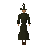
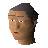
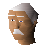
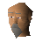
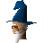

Wizards' Tower
Location at 3112, 3153 · Kingdom Of Misthalin
Open on the world map → Open in knowledge graph → Below: Wizards' Tower (underground)
NPCs
| NPC | Level | Spawns | Notable drops |
|---|---|---|---|
| 82 | 1 | Coins, Fire rune, Chaos rune, Gem drop table | |
 Wizard Grayzag | 41 | 1 | |
| 9 | 6 | Coins, Staff, Chaos rune, Nature rune | |
 Banker | 2 | ||
 Financial Advisor | 1 | ||
 Quest Guide | 1 | ||
 Traiborn | 1 | ||
| 1 |